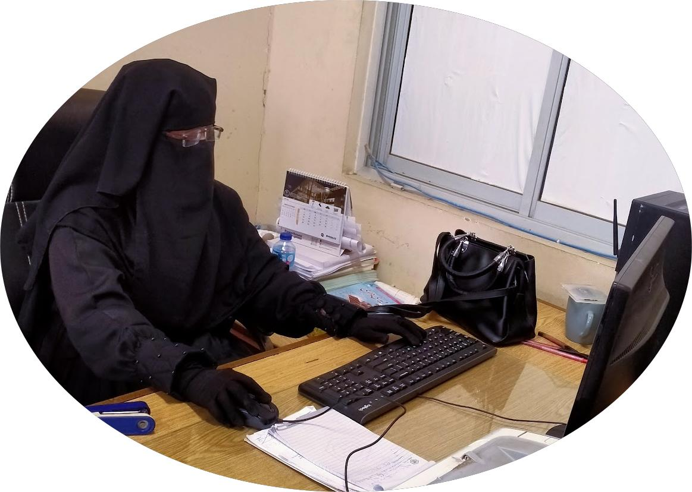

Interactive Resume Builder

Personal Information
Name:
Aqsa Abdul Qadir
Phone number:
033-2833359-6
Email address:
aqsa@gmail.com
Education
BS Food Science and Technology, Jinnah University for Women, (2019-2022)
Quran-E-Hafiz
Skills
Proficiency in MS Office.
Strong English language skills
Proficient in TypeScript.
Skilled in using Next.js.
Experienced in Tailwind CSS.
Strong problem-solving skills.
Knowledgeable in API development.
Work Experience
Frontend Developer (Self-Learning and Projects)
Dates: Ongoing (2024)
Building interactive web applications using TypeScript and Next.js, focusing on clean and modular code.
Developed a personal portfolio website using Next.js 13, TypeScript, and Tailwind CSS, showcasing expertise in frontend design and development.
Transitioned the portfolio project from Tailwind CSS to custom CSS for greater flexibility and design control.
Show/Hide Skills Section